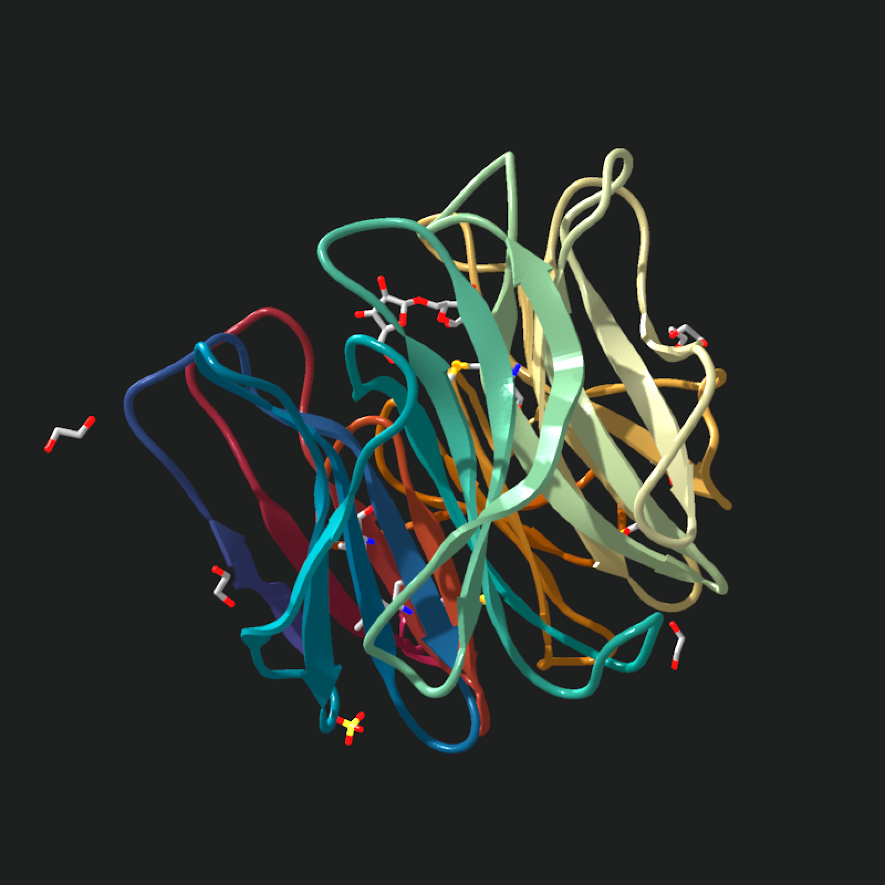
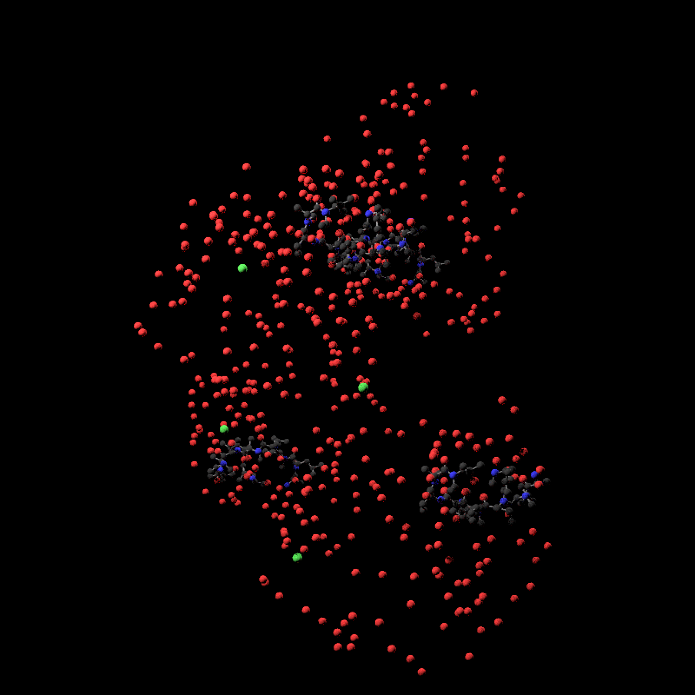

Reads a legacy fixed-width PDB file and extracts atom locations, bond connections, backbone residue information, and secondary structure records. `model$atoms` and `model$bonds` remain compatible with the existing atom and bond scene generators. Biological assemblies can be generated from `REMARK 350 BIOMT` transforms when requested.
read_pdb(
filename,
atom = TRUE,
nsr = TRUE,
assembly = c("asymmetric_unit", "biological"),
assembly_id = 1L,
verbose = FALSE
)Path to the PDB file, or a protein name/4-character PDB ID to download from RCSB when it is not an existing file and does not end in `.pdb`.
Default `TRUE`. Whether to include standard residue `ATOM` records in `model$atoms`.
Default `TRUE`. Whether to include `HETATM` records in `model$atoms`.
Default `"asymmetric_unit"`. Either the deposited asymmetric unit or the biological assembly generated from `REMARK 350 BIOMT` transforms.
Default `1L`. Biological assembly identifier to use when `assembly = "biological"`.
Default `FALSE`. If `TRUE`, report parsed PDB metadata and atom/residue/model counts.
List giving the parsed PDB model.
# Start with a local PDB file and the deposited asymmetric unit. Both ATOM
# and HETATM records are kept, and verbose output prints parse metadata.
pdb_file = download_pdb("2w5o", out_dir = tempdir(), overwrite = TRUE)
model = read_pdb(
pdb_file,
atom = TRUE,
nsr = TRUE,
assembly = "asymmetric_unit",
verbose = TRUE
)
#> Read COMPLEX STRUCTURE OF THE GH93 ALPHA-L-ARABINOFURANOSIDASE OF FUSARIUM GRAMINEARUM WITH ARABINOBIOSE PDB models [1]
#> PDB ID: 2W5O
#> Experiment: X-RAY DIFFRACTION
#> Parsed: 3231 atoms, 354 residues, 1 chains, 182 bonds
model |>
generate_ribbon_scene() |>
render_model(
pathtrace = FALSE,
width = 800,
height = 800,
background = "grey12"
)

# The biological assembly applies REMARK 350 BIOMT transforms when present.
biological_model = read_pdb(
pdb_file,
assembly = "biological",
assembly_id = 1L
)
# This ligand-only parse keeps HETATM records and drops standard protein
# atoms, which is useful for ligand and ion views.
ligand_file = download_pdb("5hsv", out_dir = tempdir(), overwrite = TRUE)
ligand_model = read_pdb(ligand_file, atom = FALSE, nsr = TRUE)
ligand_model |>
generate_full_scene(force_single_bonds = TRUE) |>
render_model(pathtrace = TRUE, width = 800, height = 800, samples = 32)

# A bare PDB ID is downloaded automatically when no matching local file is
# found. Verbose output reports the multi-model ensemble.
old_dir = setwd(tempdir())
ensemble_model = read_pdb("1co1", verbose = TRUE)
#> Downloaded RCSB PDB 1CO1 for '1co1' to ./1co1.pdb
#> Read FOLD OF THE CBFA PDB models [1-10]
#> PDB ID: 1CO1
#> Experiment: SOLUTION NMR
#> Declared models: 10
#> Parsed: 17880 atoms, 1150 residues, 10 chains, 0 bonds
setwd(old_dir)